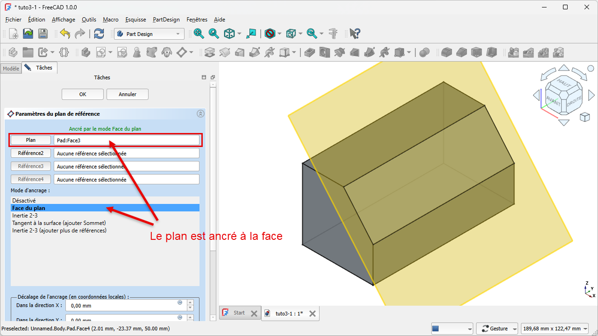
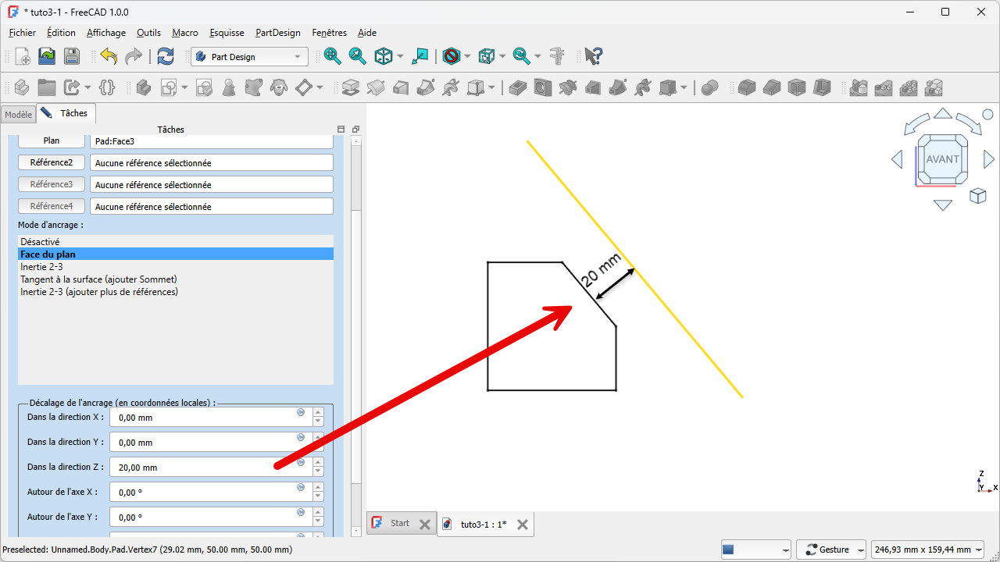

Hulpvlakken (referentievlakken)Plans de référenceDatum planes
Tot nu schetste je op de drie basisvlakken (XY/XZ/YZ) of op een vlak van je solid. Maar soms wil je tekenen waar geen vlak is: op een hoogte boven de bodem, evenwijdig aan maar verschoven van een wand, of op een schuine stand. Daarvoor maak je zelf een referentievlak — een hulpvlak om op te schetsen.Jusqu'ici vous dessiniez sur les plans de base ou une face. Parfois il faut dessiner là où il n'y a pas de face : à une hauteur, décalé d'une paroi, ou incliné. On crée alors un plan de référence.So far you sketched on the base planes or a face of your solid. Sometimes you need to draw where there's no face: at a height, offset from a wall, or tilted. For that you make your own datum plane — a helper plane to sketch on.
- uitleggen waarvoor een referentievlak dientexpliquer l'utilité d'un plan de référenceexplain what a datum plane is for
- een referentievlak maken, parallel aan een vlak met een offsetcréer un plan parallèle à une face avec décalagecreate a datum plane parallel to a face with an offset
- de vier ankertypes herkennenreconnaître les quatre types d'ancragerecognise the four attachment types
- op een referentievlak schetsendessiner sur un plan de référencesketch on a datum plane
Workbench: Part Design. Een referentievlak is een datum-element binnen je Body.Atelier : Part Design. Un plan de référence est un datum du corps.Workbench: Part Design. A datum plane is a datum element in your Body.
Commando: Part Design → Maak een referentievlak. In het Taken-paneel kies je een referentie (een vlak of rand), een ankermodus (bv. Face du plan = evenwijdig aan de face) en een decalage/offset.Commande : Part Design → Créer un plan de référence. Choisissez une référence, un mode d'ancrage et un décalage.Command: Part Design → Create a datum plane. Pick a reference (a face or edge), an attachment mode and an offset.
- Selecteer een vlak van je solid (de referentie).Sélectionnez une face (la référence).Select a face of your solid (the reference).
- Klik Maak een referentievlak; kies de ankermodus (bv. evenwijdig aan de face).Cliquez Créer un plan ; mode d'ancrage.Click Create a datum plane; pick the attachment mode.
- Geef een offset (bv. 20 mm in Z) → OK.Donnez un décalage (20 mm en Z) → OK.Set an offset (e.g. 20 mm in Z) → OK.
- Selecteer het vlak → Schets maken en teken erop.Sélectionnez le plan → Créer une esquisse.Select the plane → Create sketch and draw on it.
01Een referentievlak verankeren aan een faceAncrer un plan à une faceAnchoring a datum plane to a face
Een referentievlak heeft een referentie nodig waaraan het vasthangt — meestal een bestaand vlak of een rand. Hieronder is het hulpvlak verankerd aan een face van de solid: het ligt er evenwijdig aan en beweegt mee als je het onderdeel wijzigt. Zo "zweeft" het niet, maar blijft het netjes gekoppeld.Un plan de référence s'ancre à une référence (une face, une arête). Ci-dessous il est ancré à une face : parallèle et solidaire des modifications.A datum plane needs a reference it hangs from — usually a face or edge. Below, the helper plane is anchored to a face: parallel to it and moving along when you change the part.

02Een offset: het vlak op afstand zettenUn décalageAn offset
Een verankerd vlak ligt standaard precies op zijn referentie. Met een offset (décalage / attachment offset) schuif je het op een vaste afstand weg — bijvoorbeeld 20 mm boven de bodem. Zo krijg je een schetsvlak precies op de hoogte die je nodig hebt, zonder dat daar materiaal hoeft te zijn.Avec un décalage, on éloigne le plan d'une distance fixe (p. ex. 20 mm au-dessus du fond) : un plan de croquis à la bonne hauteur.With an offset you shift the plane a fixed distance away (e.g. 20 mm above the bottom): a sketch plane exactly at the height you need.

03De vier ankertypesLes quatre types d'ancrageThe four attachment types
Lachiver onderscheidt vier handige manieren om een referentievlak te plaatsen:Lachiver distingue quatre façons utiles :Lachiver lists four handy ways to place a datum plane:
- Parallel aan een vlak — evenwijdig aan een bestaande face (met of zonder offset).Parallèle à une face (avec décalage).Parallel to a face (with an offset).
- Loodrecht op een rand — haaks op een gekozen rand.Perpendiculaire à une arête.Perpendicular to an edge.
- Tangens aan een oppervlak — rakend aan een gebogen vlak.Tangent à une surface.Tangent to a surface.
- Normaal op een curve — loodrecht op een kromme lijn.Normal à une courbe.Normal to a curve.
Een referentievlak is een zelfgemaakt schetsvlak dat je vrij kunt plaatsen en oriënteren, maar dat gekoppeld blijft aan zijn referentie. Wijzig je de solid, dan beweegt het vlak (en alles wat erop staat) netjes mee.Un plan de référence est un plan de croquis que vous placez librement mais qui reste lié à sa référence.A datum plane is a custom sketch plane you place freely but which stays linked to its reference. Change the solid and the plane (and what's on it) follows.
Handig voor radioamateurs: een schuin frontpaneel (vlak onder een hoek), een montagerichel op een vaste hoogte in de bak waar je printplaat op rust, of een opening in een gekantelde wand. Telkens maak je eerst het juiste hulpvlak en schetst daar dan op.Un panneau incliné, un rebord à hauteur fixe pour la carte, une ouverture dans une paroi inclinée.A tilted front panel, a mounting ledge at a fixed height for the PCB, or an opening in a tilted wall. Make the right helper plane first, then sketch on it.
Maak in je bak een referentievlak parallel aan de bodem met een offset van 20 mm (de hoogte waarop je printplaat moet rusten). Schets op dat vlak een dunne richel of vier steunpunten en pad ze tot ze de bodem raken. Wijzig daarna de offset naar 15 mm en zie de steunpunten mee zakken.Créez un plan parallèle au fond, décalage 20 mm ; dessinez un rebord/des appuis. Changez le décalage à 15 mm.Make a datum plane parallel to the bottom, offset 20 mm (where the PCB rests). Sketch a ledge or four supports and pad them. Then change the offset to 15 mm and watch them follow.
04Veelgemaakte foutenErreurs fréquentesCommon mistakes
- Geen referentie kiezen. Zonder verankering zweeft het vlak en verschuift het onvoorspelbaar. Kies altijd een face of rand.Pas de référence. Le plan flotte. Choisissez une face/arête.No reference picked. The plane floats and drifts. Always pick a face or edge.
- Verkeerde ankermodus. Het vlak staat anders dan bedoeld. Controleer de modus (parallel, loodrecht, tangens, normaal).Mauvais mode. Vérifiez (parallèle, perpendiculaire…).Wrong attachment mode. Check the mode (parallel, perpendicular, tangent, normal).
- Vergeten dat het meebeweegt. Wijzig je de referentie-face, dan verplaatst het vlak (en je schets) mee — meestal gewenst, maar wees je ervan bewust.Oublier le lien. Le plan suit sa référence.Forgetting it follows. Change the reference face and the plane (and sketch) move too.
Wil je dezelfde schets op een ander vlak zonder hem opnieuw te tekenen? Selecteer de schets in de modelboom, kopieer (Ctrl+C, met de optie auto select depending objects uitgevinkt), plak (Ctrl+V), sleep hem in je Body, en koppel hem via attachment aan het gewenste vlak. Het carbon copy-commando maakt een gekoppelde kopie die het origineel volgt; gewoon kopiëren-plakken geeft een losse kopie.Réutiliser un croquis sur un autre plan : sélectionnez-le, Ctrl+C/Ctrl+V, glissez-le dans le corps, puis ré-attachez via attachment. Le carbon copy donne une copie liée ; copier-coller, une copie indépendante.Reuse a sketch on another plane: select it in the tree, Ctrl+C/Ctrl+V, drag it into your Body, then re-attach it via attachment. The carbon copy command makes a linked copy that follows the original; plain copy-paste makes an independent one.
Een referentievlak kun je verschillend verankeren: parallel aan een vlak (met een offset-afstand), loodrecht op een vlak of rand, onder een hoek, of door punten/randen — en voor gevorderd werk ook tangent aan een oppervlak of loodrecht op een kromme. Je kiest een basis en stelt offset of hoek in via de attachment — zo maak je net het vlak dat je nodig hebt om op een schuine of verspringende plek te schetsen.Un plan : parallèle (offset), perpendiculaire, incliné, ou par des points ; aussi tangent à une surface ou normal à une courbe, via l'attachment.A datum plane: parallel (offset), perpendicular, at an angle, or through points — and, for advanced work, tangent to a surface or normal to a curve — set via the attachment.
05Samenvatting
Een referentievlak is een zelfgemaakt schetsvlak voor plekken waar geen face is. Je verankert het aan een vlak of rand (vier ankertypes: parallel, loodrecht, tangens, normaal) en geeft eventueel een offset. Daarna schets je erop zoals op elk ander vlak. Het blijft parametrisch gekoppeld aan zijn referentie.Un plan de référence est un plan de croquis sur mesure, ancré (4 types) avec un décalage, et lié à sa référence.A datum plane is a custom sketch plane for places with no face. You anchor it (four types) with an optional offset, then sketch on it. It stays linked to its reference.
- Referentievlak = zelfgemaakt schetsvlak, verankerd aan een face/rand.Plan de référence = plan de croquis ancré.Datum plane = a custom sketch plane, anchored to a face/edge.
- Met een offset zet je het op een vaste afstand/hoogte.Un décalage = distance/hauteur fixe.An offset sets a fixed distance/height.
- Vier ankertypes: parallel, loodrecht, tangens, normaal.Quatre types : parallèle, perpendiculaire, tangent, normal.Four types: parallel, perpendicular, tangent, normal.